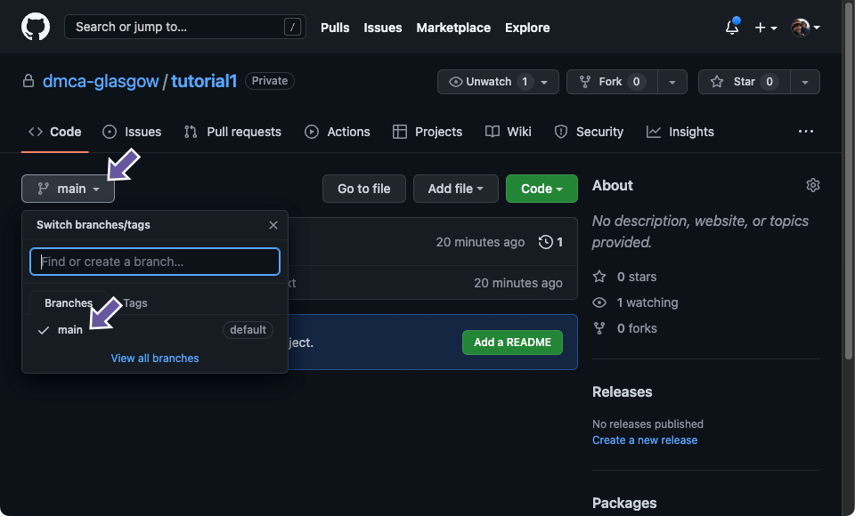
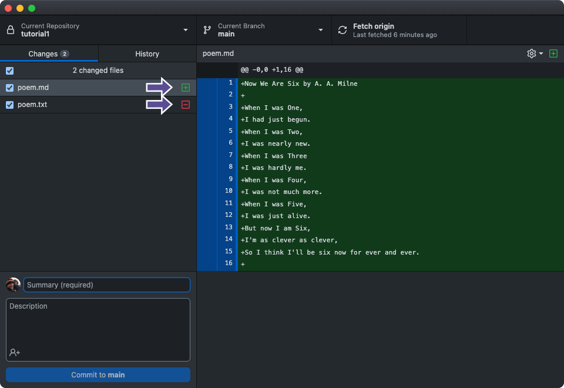

Code
git config --global user.name "Your Name"
git config --global user.email "youremail@yourdomain.com"This week’s material is based on the Version Control Course from the School of Mathematics and Statistics at Glasgow University. The content has been reduced to fit the class structure. At the end of Week 8, please provide some feedback on the materials on https://uofg.qualtrics.com/jfe/form/SV_56jF2LNgmA6qrhY.
Version control is used throughout industry and academia as a way of developing and sharing code. Some people tend to think of version control as simply being GitHub, but it’s important to be aware that version control is a much more general area and GitHub is just a useful way of hosting a version control system called Git. An alternative approach might be more appropriate for your project, thus we recommend thinking through the needs of your project before committing to one scheme, however Git/GitHub is often a good choice for version control, hence why we have created a course around it. GitHub, as a host for Git repositories, is widely used within both academia and industry.
There is an increasing requirement that graduates must have this skill and you may even start to see version control in some of your courses if you are a student. From an academic perspective, there is a drive for open-access code, data, and research. Releasing your code via GitHub can help others use your research, increasing its utility and driving the impact of your work.
A Version Control System is a tool that helps keep track of code and software development projects as they change over time. The idea is to save snapshots of code at any given time, called versions, to allow developers to understand how the code was developed and if necessary revert (go back) to previous versions.
When coding collaboratively researchers or developers can work on the same code base, keeping individual versions of the code separate from each other. These different sections are called branches, which you’ll learn about in this course, can later be combined by the system such that code that has stayed the same remains unchanged and changes made by each researcher or developer can be combined into one version.
To get up and running you will need to install Git and sign up for a GitHub account. In this section, we will describe how to install Git on Mac and Windows and how to link it with your GitHub account.
As with any tool, there are multiple ways of interacting with it and individuals tend to choose the way that works best for them/their workflow. Two of the most common ways of interacting with git/version control is either through the command line using the ‘git’ command or through a graphical user interface (GUI).
To address both needs throughout this course, you can either work through the examples using the command line or GitHub Desktop - a popular GUI (or compare both) for using Git. When you see a section that has a border around it, you can select either ‘Command-line’ or ‘GitHub Desktop’ at the top, and this will change all sections on the page to your preferred program.
As Git is primarily a developer tool, it may be a little harder to install than you are used to. Git is a command-line program, however, you can opt to install a graphical user interface (GUI) for Git such as GitHub Desktop and avoid having to open a command-line terminal at all if you don’t want to!
If you’re familiar with installing command-line tools, GitHub provides a short guide named Install Git that should get you up and running quickly.
Below are some additional tips for those needing a bit more guidance.
Git is a command-line tool that is usually already installed on Macs and can be accessed from the built-in terminal. The Terminal application can be found by navigating to the Applications/Utilities folder or searching for ‘Terminal’ in Spotlight.
This Getting Started guide provides a bit more detail on which options to select during the installation process for the best experience.
After clicking the “Download Git for Windows” button you will arrive at a GitHub Release page, with lots of variations to choose from.
To know which option is right for your system, first, you need to find out if your computer is 32-bit or 64-bit:
Go to Start > Settings > System > About. Check the bit version under Device specifications > System type.
Then choose the .exe file that matches your system:

Once installed, it can be accessed from the Git Bash terminal which comes included as part of the Git For Windows package. You can find Git Bash by opening the Start menu and typing ‘Git Bash’ into the search bar. However, if you plan on using a GUI for Git such as GitHub Desktop, you don’t need to open a terminal at all.
If you haven’t done so already, now is a good time to sign up for a free GitHub account which you can do by going to github.com and providing some account information. Make sure to pick a sensible and easy to remember username as you may be using this account for a long time to come!

There are several applications available which allow you to use Git via a graphical user interface (GUI). We will cover one of the most popular ones, GitHub Desktop, provided by GitHub.
If you are comfortable using the Git command-line interface directly, it is not necessary to install GitHub Desktop. Otherwise, navigate to desktop.github.com and install the correct version for your computer (e.g., Windows or Mac):

Once installed open GitHub Desktop and sign in with your GitHub account’s username and password.
Other popular GUIs include Sourcetree and GitKraken, but we won’t cover these in the course. The article Best Git GUI Clients is a good starting place if you’d like to learn more about the strengths and weaknesses of different GUIs.
Git needs a name and email address to attach to your commit signature (a bit like an email signature). Let’s set this up now, and be sure to use the same email address that you use to sign into GitHub.
git config --global user.name "Your Name"
git config --global user.email "youremail@yourdomain.com"Once done, you can confirm that the information is set by running:
git config --listAnd should see output similar to this:
user.name=Your Name
user.email=youremail@yourdomain.comFrom the main menu, select GitHub Desktop > Settings... . In the settings pane, select ‘Git’ from the sidebar:

Let’s configure Git to communicate securely with our GitHub account.
The most common way to seamlessly and securely connect Git to GitHub is using SSH (Secure Shell Protocol). If you are unfamiliar with the concepts and workflow of SSH, be prepared to spend a little time learning how it works and setting it up. Thankfully GitHub has excellent documentation for Mac, Windows and Linux on this subject which is provided below.
The process is as follows:
First, run a command which generates an SSH key pair— a public key and a private key. When prompted, enter a passphrase of your choice. Next, add the private key and associated passphrase to ssh-agent.
Full instructions can be found on GitHub for generating a new SSH key and adding it to the ssh-agent.
Full instructions can be found on GitHub for adding a new SSH key to your GitHub account.
You can test the connection by running the command:
ssh -T git@github.comFull instructions can be found on GitHub for testing your SSH connection.
From the main menu, select GitHub Desktop > Settings.... In the settings pane, select ‘Accounts’ from the sidebar, and click the ‘Sign In’ button underneath ‘GitHub.com’:

Lastly, As part of using Git/GitHub you often need to write short messages explaining the changes you have made, which are often useful when others (or indeed yourself a few months down the line) are looking at your project.
Thus it is useful to set the preferred application that you might want to use for this task.
When you create a Git commit, which you will do often, Git will ask you to write a message and open Vim by default. Vim is a very powerful terminal-based code editor, with complicated commands which makes some tasks when editing text or code much easier. However, Vim has a (famously) steep learning curve, and it is out of scope for this course however there are some excellent resources online if you wish to learn more.
If you are not familiar with Vim you could swap to an alternative editor (see the next few sections), although this change will only affect certain operations (e.g. writing a commit message if you did not specify it on the command line), and for other operations you will need to basic Vim, which we will introduce when appropriate.
If you do decide to use Vim or alternatively accidentally start it, slightly infuriatingly, for those who have not worked with it before, it is not easy to close! Hint: press : then q.
Nano is a popular choice when changing Vim, as even if it is unfamiliar to you, it’s still command-line-based, and much more intuitive as it has helpful instructions at the bottom of each screen.

To change Git’s editor to Nano use the following command:
git config --global core.editor "nano"Most code editors can be configured to open via the command line. The first step is to ensure your preferred editor can be opened this way, for example:
VSCode can be opened with code after running a script.
Sublime Text can be opened with subl after running a script.
RStudio can be opened with rs after running a script.
Once this is tested and working for your preferred editor, you can tell Git to use this command. Some editors also require a –wait flag, or they will open a blank page. For example:
git config --global core.editor "subl --wait"From the main menu, select GitHub Desktop > Settings.... In the settings pane, select ‘Integrations’, then select your preferred code editor from the dropdown under ‘External Editor’:

This section aims to familiarise you with Git commands, and the Git ethos. If you are using Git and GitHub primarily as a backup and sharing tool, then this section is for you. You may find more technically accurate descriptions of these commands elsewhere online, but in this tutorial, we will aim to minimise jargon as much as possible to ease understanding, particularly for those of you without a Computing Science background.
To illustrate some of the concepts behind git and GitHub we will use a graphical approach using a Git visualisation library called gitgraph. This will allow us to give a graphical understanding of what git is doing, alongside showing how to do this with either the command line or GitHub Desktop. These visualisations will be very important when we explore branching.
One way to think about a Git/GitHub project is a folder on your local computer which is version controlled and potentially (also) on GitHub.
To set up this structure, the workflow we are going to look at next is creating a local project folder, adding a file, initialising Git, and then saving a copy to Github. It’s also a valid workflow to first create a GitHub repository, then ‘clone’ it to your computer (see Unit 3).
As part of this course, you can either follow the instructions for Command-line or GitHub Desktop. Simply choose the tab you want below and all sections will change to the desired format. For example, the outline of the workflow is different for the two options, as GitHub Desktop automates some of the tasks:
Create a local repository
Create a new file
Add the file to the Git ‘stage’
Commit the file
Create a new repository on GitHub
Configure our local repository to point to the new GitHub repository as a remote ‘origin’
Push our commit(s) to sync them with the repository on GitHub.
Create a local repository
Create a file
Commit the file
Publish the repository on GitHub.
Finally, we are going to look at how you update this file. This essentially follows the same process where we:
Update the file (or add one)
Add the changes
Commit the changes
Push the changes
First we need to create a local Git repository which will allow us to work through this tutorial. Ensure you have Git installed (see the ‘Installation and command-line usage’ section).
Create an empty folder on your computer using mkdir and then change to that directory using cd:
mkdir tutorial1Alternatively as we will create several tutorials throughout this course you may wish to first create a folder to contain them and then create the folder for the first tutorial.
Then run git init to initialise Git inside the folder:
cd tutorial1
git initInitialized empty Git repository in /Users/staff/Work/tutorial1/.git/The git init command turns a simple folder into a Git repository.
Choose File > New Repository... from the menu.
In the “Create a New Repository” form, name the repository “tutorial1”, set the “Local Path” field to your preferred location and click the “Create Repository” button:

That’s it! You now have a local Git repository running in this folder. We will come back and learn more about the settings for the README, Git Ignore, and License later on in the course. We can now visualise our new git repository, however as we have not added anything to our git it is currently empty.
Git has created a new folder inside your folder called .git. You may not be able to see this folder on a Mac or Windows operating system, as it is a convention for files and folders that start with a . to be hidden by default. However, it is important to know that the folder is there, as it holds information that is necessary for Git to function correctly. This folder should not be manually edited, instead, you should use Git commands which in turn update the information here. If you decide to move all your files to another folder for some reason, be careful to also move this .git folder if you want to keep using your Git repository!
In the Finder on MacOS you can show hidden files using the following keyboard shortcut:
Shift + Command + "."In File Explorer on Windows, select:
View > Show > Hidden items.Now let’s add a file. Of course, this would usually be code, configuration, or documentation files, but to keep this course somewhat generic and avoid distracting programming concepts, let’s add a short poem in a plain text file poem.txt to the folder. You should use your preferred Code Editor to create the file, such as VSCode or RStudio. If using Word or other “rich text” editors ensure you choose the File Format “Plain text (.txt)” when saving the file.
Ensure the file is saved. Git can only ‘see’ changes that are saved.
Now We Are Six by A. A. Milne
When I was One,
I had just begun.
When I was Two,
I was nearly new.
When I was Three
I was hardly me.
When I was Four,
I was not much more.
When I was Five,
I was just alive.
But now I am Six,
I’m as clever as clever,
So I think I’ll be six now for ever and ever.
Ensure the file is saved. Git can only ‘see’ changes that are saved.
Let’s have our first look at the output of git status.git status tries to provide helpful information depending on your current situation.
When using Git, you’ll run git status so often that it will soon become muscle memory! The git status command only outputs status information and won’t modify commits or changes in your local repository.
Now we’ve created a file let’s see what it outputs:
git statusOn branch main
No commits yet
Untracked files:
(use "git add <file>..." to include in what will be committed)
poem.txt
nothing added to commit but untracked files present (use "git add" to track)We can see that Git knows we’re on the main branch (we’ll introduce branching concepts gradually as we progress through the course).
There have been no commits yet (more on this later in this unit).
Git knows our poem.txt file has been created but it is still “untracked” (a version has not been explicitly added to Git yet and therefore this file is not covered by version control)
The --short or -s flag removes all but the most relevant information:
git status -s?? poem.txtHere we can see the Git shortened syntax for “untracked” is ??.
Let’s have a look at GitHub Desktop. As you work on your project GitHub Desktop will watch your files update when it detects changes:

Here we can see Git has found our new file! We have added some numbered purple circles to the screenshot above, let’s go through those areas:
Here we can see that Git knows we’re on the main branch (we’ll introduce branching concepts gradually as we progress through the course).
If you click on the History tab, you’ll see there have been no commits yet (more on this later in this unit).
The checkbox beside the filename is checked, which in Git terms, means the file has been “staged” for commit
Adding files to the stage is an intermediate step before committing to a version. We need to choose (stage) the files we want to add to our commit. Staging may seem an unnecessary step at this point, but later we will demonstrate how this can be a powerful tool.
For now, we will stage all changes, our only file poem.txt.
We can stage the file using the add command:
git add poem.txtNote that there two options here: * git add <path>: Stage a specific directory or file * git add .: Stage all files (that are not listed in the .gitignore) in the entire repository.
Now we’ve staged the file let’s have a look at the status again:
git statusOn branch main
No commits yet
Changes to be committed:
(use "git rm --cached <file>..." to unstage)
new file: poem.txtOur poem.txt file has been added to the stage! If we view the short version we can see A for “add”:
git status -sA poem.txtThere is also a --verbose or -v flag. In this case, it also includes the “diff” of poem.txt (more information on what a “diff” is after this example):
git status --verboseOn branch main
No commits yet
Changes to be committed:
(use "git rm --cached <file>..." to unstage)
new file: poem.txt
diff --git a/poem.txt b/poem.txt
new file mode 100644
index 0000000..12f4ac3
--- /dev/null
+++ b/poem.txt
@@ -0,0 +1,16 @@
+Now We Are Six by A. A. Milne
+
+When I was One,
+I had just begun.
+When I was Two,
+I was nearly new.
+When I was Three
+I was hardly me.
+When I was Four,
+I was not much more.
+When I was Five,
+I was just alive.
+But now I am Six,
+I'm as clever as clever,
+So I think I'll be six now for ever and ever.
+We can view this “diff” output on its own using the command in the next box.
poem.txt (more information on what a “diff” is after this example).
Once we have determined which files we want to stage, we can then commit the change(s). Importantly unlike (say) Dropbox, the changes in your project are not stored until you tell Git that they are ready to be stored i.e. in Git you ‘commit’ them.
The act of ‘committing’ in Git creates a ‘version’ (sometimes just called a ‘commit’). A version can be thought of as a snapshot of your whole project at that time. Once a commit has been made, it’s always possible to get back to this version. This simple concept can be extremely powerful for the evolution and maintenance of small to very large programming projects.
Each version should be accompanied by a message describing the change made by the commit. This can be a skill in itself as you wish to tell your collaborators or your future self what changes have been made (we will discuss best practices in Unit 4).
Now let’s create our first commit!
git commit --message "Create poem.txt"[main (root-commit) acf18e1] Create poem.txt
1 file changed, 16 insertions(+)
create mode 100644 poem.txtIf you do not specify a message then Git will open up your text editor of choice (see unit 1) to add a message.
Experienced users will use the shorthand -m instead of --message, i.e. git commit -m "Create poem.txt".
Git status shows “working tree clean”, which means all changes detected in the directory have been committed to Git:
git statusOn branch main
nothing to commit, working tree cleanLet’s have our first look at the log:
git logcommit acf18e19f0803fd405f7d1e196fbaf710066728d
Author: David McArthur <david.mcarthur.2@glasgow.ac.uk>
Date: Mon Aug 21 13:41:25 2023 +0100
Create poem.txtThere is a log of our first version! (Again this opens vim, and to exit press : followed by q).
Make sure the file is staged making sure the checkbox poem.txt is ticked, add the message “Create poem.txt” to the summary, then click the “Commit to main” button:

We have created our first commit! GitHub Desktop now says we have “No local changes”, which means all changes detected in the directory have been committed to Git:

Where did our commit go? By clicking on the “History” tab, we can see our first commit:

You have now created a Git repository on your local machine and added a file, however this is only available to people who use your computer. In this section we will demonstrate how to make this available to everyone via the GitHub website.
Up to this point, we have been using Git locally. Next, let’s learn how to put a copy of our project on GitHub to share it with others or just make a backup for ourselves.
When creating a GitHub repository, you will need to decide if it will be private or public. Private will mean the code is only available to yourself and other contributors, but public will mean that anyone will be able to see your code. The purpose and stage of your project will determine which of these makes the most sense.
The decision is ultimately a pragmatic one, and can strongly depend on your particular circumstances, for example, you may wish to develop a new open-source software library in a public repository to encourage interest and contributions from others earlier, or you may wish to keep it private either for your own use only or until it is ready to be shared. Approaches to this can also vary, in some parts of Academia it is common to having a public repository on active research projects, in others a repository is made public once the project has finished.
Important: Be careful not to put anything sensitive on a public repository as it will be accessible to all, although it is probably not to put it on GitHub either way.
To be able to add our content to a GitHub page (remote repository), you will firstly need to create a repository. GitHub Desktop does this for you, but for the command-line, we need to do it ourselves. You can do this by following the Create a repo quickstart guide to create a new repository for our example. Here it is named “tutorial1” but you can name it whatever you like.
The Git command for syncing local commits with GitHub is push. Let’s try it now:
git pushfatal: No configured push destination.
Either specify the URL from the command-line or configure a remote repository using
git remote add <name> <url>
and then push using the remote name
git push <name>Git is telling us we still need to configure our local repository to use our new GitHub repository as a remote (a remote is a copy of our repository stored in another location, in this case on GitHub). When we ask Git to list the configured remotes there is no output:
git remoteoriginSo let’s set that up now.
On GitHub, copy the URL of your empty repository:

And paste it in the following command:
git remote add origin <your-repository-url>You can check git remote again:
git remoteorigingit remote --verboseorigin https://github.com/dmca-glasgow/tutorial1.git (fetch)
origin https://github.com/dmca-glasgow/tutorial1.git (push)We can see that our GitHub repository is configured for both fetch and push commands.
Now let’s try to push again:
git pushfatal: The current branch main has no upstream branch.
To push the current branch and set the remote as upstream, use
git push --set-upstream origin main
To have this happen automatically for branches without a tracking
upstream, see 'push.autoSetupRemote' in 'git help config'.Git is telling us it can’t sync our local commits to main because GitHub doesn’t know about the main branch yet. So let’s follow its instructions to tell GitHub about this branch:
git push --set-upstream origin mainTo https://github.com/dmca-glasgow/tutorial1.git
* [new branch] main -> main
branch 'main' set up to track 'origin/main'.And now, if we refresh our GitHub repository page, we should see our poem.txt file!
In GitHub Desktop, click the “Publish repository” tab, give it a name, and click the “Publish Repository” button:

And now, if we refresh our GitHub repository page, we should see our poem.txt file!

We can click on the commits icon:

To view our commit history:

And we can click on the branches button to view our main branch:

Now that we have a local Git repository that is linked to GitHub, let’s briefly explore the process of updating our project.
First, let’s rename our poem.txt file to poem.md (for Markdown).
In Git terms, renaming a file is considered deleting one file (poem.txt) and creating a new file (poem.md).
You can see that poem.md currently has ‘untracked’ status as it has not been added to Git yet.
git statusOn branch main
Your branch is up to date with 'origin/main'.
Changes not staged for commit:
(use "git add/rm <file>..." to update what will be committed)
(use "git restore <file>..." to discard changes in working directory)
deleted: poem.txt
Untracked files:
(use "git add <file>..." to include in what will be committed)
poem.md
no changes added to commit (use "git add" and/or "git commit -a")The icon beside poem.md has a plus symbol for a new, untracked file, whereas the poem.txt file has a red minus symbol indicating it has been deleted.

Next, let’s commit this change. It might seem counter-intuitive, but we need to stage and commit both files in this scenario because adding a file and deleting a file are both actions that need to be committed.
Let’s do that now:
git add poem.txt poem.mdgit commit -m 'rename poem.txt to poem.md'
[main edac35e] rename poem.txt to poem.md
1 file changed, 0 insertions(+), 0 deletions(-)
rename poem.txt => poem.md (100%)
Both Git and GitHub have special file conventions, where files with a particular name have special behaviours. Git uses the ‘dotfile’ convention (a . at the start of the name), whereas GitHub typically uses all-caps. The ‘dotfile’ convention is relatively common and as your operating system may know that they are used as configuration files they may not show up in our file manager.
The most important are listed below, but please see a list of Git special files and a list of GitHub special files for more information.
When we share our codebase using Git and GitHub, either with the public or with colleagues, we can choose to exclude certain files (e.g. tell Git/GitHub never to consider them) by making use of a .gitignore file. To be more precise, we are telling Git to ignore these files from our project folder by not adding them to any commit change list.
.gitignore files use a simple syntax to make it easy to match files. The entries in this file can also follow a matching pattern.
* is used as a wildcard match/ is used to ignore pathnames relative to the .gitignore file# is used to add comments to a .gitignore fileFor example:
# <-- comments start with a hash sign
# empty lines are ignored
# ignore 'passwords.txt' at the root of your project:
/passwords.txt
# ignore 'passwords.txt' anywhere in your project:
passwords.txt
# ignore 'cache' folder at the root of your project:
/cache/
# ignore all 'cache' folders:
cache/
# ignore all .log files inside a 'logs' folder:
logs/*.log
# ignore all .html files inside the 'logs' folder including sub-folders:
logs/**/*.log
# ignore all files with .log extension:
**/*.logIf a file has already been committed to Git, ignoring it with .gitignore won’t remove it from the repository, only it’s changes from that point on. If you’d like to remove a file from Git, the simplest way is to follow these steps:
However, while the file has been removed it is still present in your history in future sections.
A strange quirk of Git is that it is only concerned with files and not folders. Your project can be split into as many files and folders as you wish with no problems, but at some point, you may be confused that Git does not ‘see’ empty folders.
As a workaround, a common convention is to create an empty file inside the folder named .gitkeep, which you can commit, enabling you to store the (not really) empty folder in your repository.